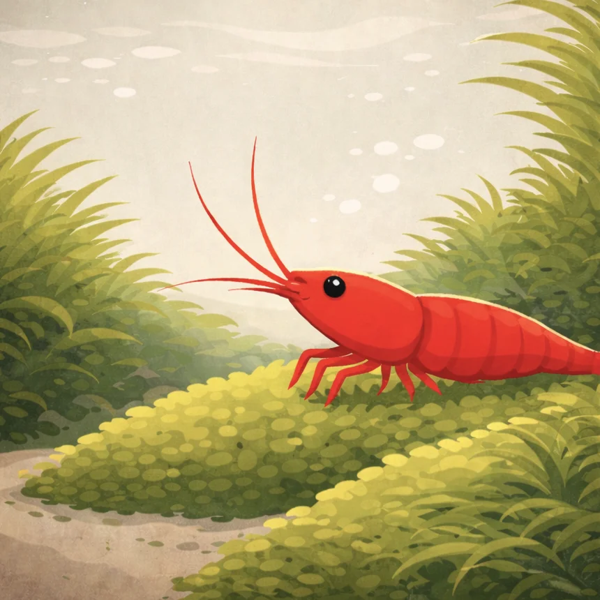
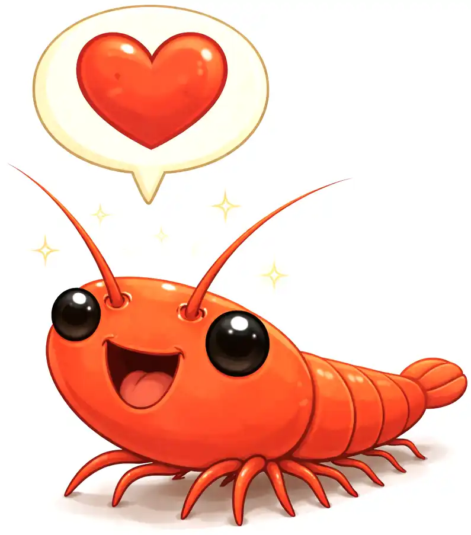

Overfeeding
Excess food can pollute the water and harm shrimp health.
Cherry shrimps are small, colorful freshwater crustaceans popular in home aquariums. This page is designed for beginners looking to learn the basics of caring for these fascinating creatures.
Cherry shrimps (Neocaridina davidi) are small freshwater shrimp known for their vibrant red coloration. They typically grow to about 1.5 inches in length and have a lifespan of around 1 to 2 years in a well-maintained aquarium.
Cherry shrimps thrive in freshwater environments with plenty of plants and hiding spots. They prefer calm waters with stable temperatures, making them ideal for peaceful aquarium setups.
Cherry shrimps primarily feed on algae and biofilm found in their environment. You can supplement their diet with specialized shrimp food and occasional blanched vegetables like spinach or zucchini.
Excess food can pollute the water and harm shrimp health.
Rapid changes in water parameters can stress or kill shrimp.
Avoid housing cherry shrimps with aggressive or predatory fish.
Caring for cherry shrimps is simple and rewarding. By providing a suitable habitat, proper diet, and avoiding common mistakes, beginners can enjoy the beauty and activity of these charming aquatic pets.
